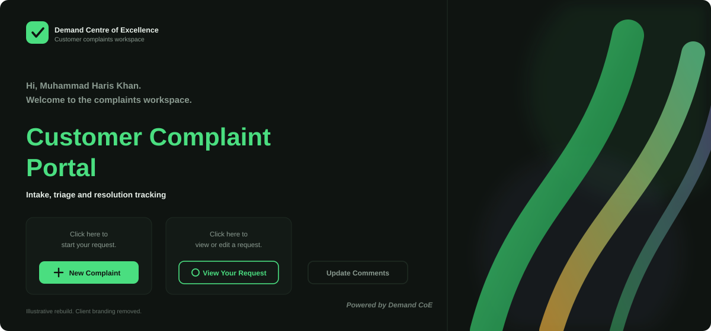
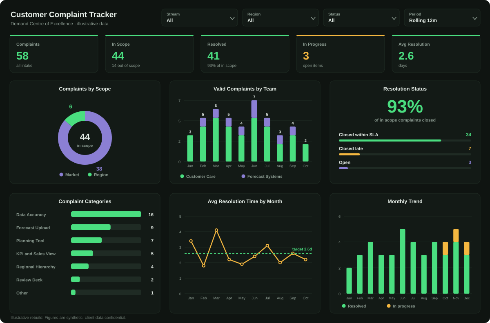

CASE STUDY · PROCESS ANALYTICS
Every demand cycle, stakeholders across markets ran into issues: a number that would not reconcile, a forecast upload that failed, a planning view that did not match. Each one got resolved. But leadership still could not answer the two questions that decide where to put effort: which team is absorbing the most, and which market keeps producing the same problem?
An issue raised in a message thread gets answered and then disappears. Nothing accumulates, so nothing can be counted. The work was getting done, but it left no trace that anyone could analyse.
That meant a set of ordinary management questions had no answer:
Which team is handling the most issues, and is that load spread evenly across the cycle?
Which markets and areas generate the most complaints, and are they the same ones each cycle?
Is this a scatter of one off problems, or a small number of categories repeating?
What is the real resolution time, and is it improving or drifting?
The design principle was that capture had to be easier than complaining informally. If logging an issue takes longer than sending a message, nobody logs it, and the data never exists.
The Power Apps form is the front door. A stakeholder logs the issue against a category, a market and a stream. Each submission writes a row to a SharePoint list, which becomes the single record of every issue raised. The Power BI report is built directly on that list, so the dashboard is never a separate copy of the truth that has to be maintained.

A tracker that never replies stops being used. I built flows in Power Automate that notify the stakeholder at the three moments that matter to them: when the item is logged, when anything is updated, and when it is resolved.
This is the part that protects the data. People keep using the form because they can see it doing something, and intake quality holds up across the cycle instead of decaying after the first few weeks.
The report answers the questions above directly. Volume splits into what the team owns and what sits outside its scope, so effort is not judged against issues that were never theirs to fix. Complaints break down by team and by market, which is what turns a general sense of pressure into a specific place to intervene. Resolution time is tracked month on month against a target rather than quoted as a single average.

Both screens above are rebuilds, not screenshots. The layout, the visuals and the questions they answer are the ones I built. The numbers are synthetic and internally consistent, and all client branding and internal system names have been removed, because the underlying data is confidential.
Response to customer complaints improved by 25%. The mechanism was not working harder on individual tickets. It was that bottlenecks became visible, so attention could be pointed at the categories and markets generating repeat volume instead of being spread evenly across everything.